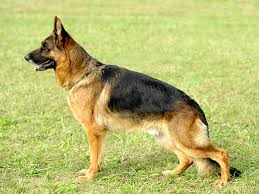
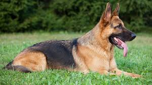

Un chien plein d'énergie, de loyauté et très utilisé dans le domaine policier et militaire.


Le Berger Allemand est originaire d'Allemagne, où il a été développé à la fin du 19e siècle.
Le capitaine de cavalerie allemand Max von Stephanitz est le créateur de la race. Son objectif était de créer le chien de travail et de berger parfait, alliant intelligence, force et obéissance.
En 1899, il fonde le premier club de race et enregistre le tout premier Berger Allemand, nommé Horand von Grafrath.
La race est issue du croisement de plusieurs chiens de berger locaux allemands, principalement le Berger de Thuringe (connu pour son agilité) et le Berger de Wurtemberg (plus robuste).